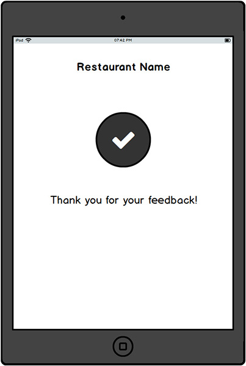

Problem Statement
While there are many ways to rate and review restaurants, these are not focused on evaluating individuals Wait Staff or servers.
Design an experience where Diners can submit positive comments and constructive suggestions for the Wait Staff. The comments can be used by the Wait Staff to both improve and help to secure new employment.
The Goal
Provide the high level flow with supporting wireframes to demonstrate the experience design for Diners to submit comments for the Wait Staff.
Research
I started with the secondary research using Internet—to know more about the Wait Staff profession, their duties, nature of work, etc. This was necessary to understand because it helps on constructing the questionnaire and collecting the appropriate comments from Diners. This can be direct and specific to the areas so that the Wait Staff can understand precisely and focus to improve their performance.
Who are Wait Staff or Servers, What they do: I chose to explore the job portals for the Wait Staff or server profession—This was helpful to know and understand the type of skills expected to perform the job at restaurants. I was able to notice a variety of skills ranging from personal appearance to communication to knowledge of food are emphasized and are cricital to perform a good job. I made a note of these information as it will be helpful to construct the questionnaire for Diners to collect the comments for the Wait Staffs.
Some of the screengrabs of job portal references that I used for my analysis are as follows:
I did research about the restaurant environment, because the Wait Staff may have an impact on their performance, but have no direct control and have to adapt to the setup! As the Diners share their experience being the environment, collecting feedback can be helpful for the Wait Staff.
What type of feedback: As I was analysing the details, collecting the comments from Diners using a list of question which are related to their skills would be helpful. According to the Wait Staff's individual experience, they perform a good job, but the potential areas to improve they skills can be collected through Diner's comments as it happens. And progressively, over a period, the Wait Staff can go through the reviews to take self initiatives on improving the respective skills and be motivated with the good performance skills.
The time that will be needed by Diner's to provide feedback on Wait Staff performance need to be considered because longer the time to provide feedback, eg. too many questions to answer, the whole process may frustrate the Diner and possibly may not pay attention to provide genuine feedback. By analysing the Wait Staff's duties and reponsibilities, I was able to group and categorise the set of questions that would help better to capture the feedback from Diners. Finally I was able to categorise the questions under Personality, Communication, Knowledge about menu and food, Accuracy of order, Hospitality and Time/Speed to serve the order for the Diners to provide feedback.
Along this research, I felt that collecting the comments from Diners using a set of key areas can be precise and the list of questions can be limited. I was initially thinking about three question per category and that would help the Wait Staff receive a detailed feedback about their performance, but also felt that reviews will take more time to complete and the Diners may not pay attention to provide genuine feedback.
Potential Actors: I tried to note the details about different type of actors and their possible portions of play during the overall process and/or their respective coordination and support in the system. Apart from Diners and Wait Staff, Restaurant Manager/owner, Recruiter, Hiring Manager were the players taking part on certain areas of Wait Staff's performance, improvement and employment. This was helpful during the task analysis and defining the task flows to cover the user journey.
How to collect feedback: I analysed few options about the medium/platform to collect the feedback from the Diner like, generic paper based (least preferrable), PDA device, Kiosk at the counter, Tablet and Smartphone. I chose Tablet and Smartphone medium for this as these are portable, familiar and easy to use with the help of Apps. All the potential actors may have an average experience using these devices and the learning curve will be very minimal!
Concept Designs
I like to explore many ideas and I prefer the whiteboard or pen/pencil and paper medium—as it is easy, convenient and quick to shape the concepts and evaluate for possible solutions for the problem. Some of my concept designs for the Diner, Wait Staff, etc as follows.
Concept A: Diner provide feedback using one question and overall comment.
Concept B: Diner provide feedback using Categories topics and overall comment.
Concept C: Diner using Category topics with one question and optional comment along with overall comments.
Wait Staff Overall Scores/comments View:Overall accumulated score for the received feedback and option to navigate each categories and respective reviews.
Wait Staff Today View: Summary of details for today's progress.
Wait Staff Profile View: Summary of profile specific details which can be viewed by Restaurant Manager, recruiter, hiring manager, etc.
Tasks Flow
Overall High Level Flow: Diner provide feedback for the Wait Staff.
Assuming that the Diners spend time on providing feedback, but if they don't provide feedback, there can be an option for Diner to do it later as per their convenient time. The following task flow depicts both the sceanarios.
Approach A: Diner using the Restaurant App to provide the feedback on the stop. Assume the restaurant app integrated with Wait Staff profile and Diner details to be used at convenience.
Approach B: Wait Staff request for review, ie, when Diner don't provide feedback on the stop but shows interest to provide feedback later and agree to share details with the app. Wait Staff register a request and the notifying the Diner about the same.
Approach B: Diner using Common/Social App to receive the request and proceed to record the feedback against the Wait Staff.
Wait Staff using Social App: Receive the feedback, review and acknowledge to add to their profile for public view.
Restaurant Manager access Wait Staff profile: Assuming the Wait Staff profile details are integrated with the restaurant app, the manager can view the latest reviews about the Wait Staff.
Restaurant Manager using Social App: The social app being primarly used by restaurant manager to view their Wait Staff reviews.

Recruiter/Hiring Manager access Wait Staff profile: As part of the new employment opportunities, the Wait Staff could enable or publish their review scores which can be accessed by recruiters or hiring managers to explore and connect for suitable new employment.
Wireframes
The concept wireframe designs for the diner task flow to provide feedback for the Wait Staff using the restaurant app or social app. I assume the Diners prefer to use the Tablet to provide the feedback mainly for the portablity, easy to use.
Review Start Screen: Greeting the Diner for the visit, and requesting to provide feedback about their experience with the Wait Staff. Displaying the Wait Staff's Name and Profile Picture to assure the Diner that the feedback will be recorded against the shown person.
Option A: A simple one page setup with five Categories and a question in each along with the rating selector. Also the diner can provide speific comment for each category.
Option B: Five Categories and a question each in a center aligned presentation along with the rating selector. The Diner can provide specific comment along with respective rating and can also enter the overall feedback before submitting the review.
End Screen: Acknowledge and greet the diner for providing the feedback.
Diner Feedback Experience: iPad App Sketch/Invision Designs
iPad Interactive Prototype Linkhttps://goo.gl/XQ9ed2
Wait Staff Profile Experience: Smartphone App Sketch/Invision Designs
Mobile Interactive Prototype Linkhttps://goo.gl/nugHpC
Here I conclude my design exercise.Thank you so much for exploring my designs, appreciate your time and patience!
Mahendra Kumar Patel